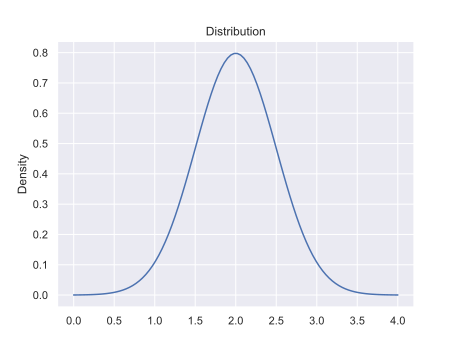
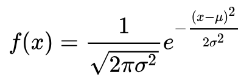
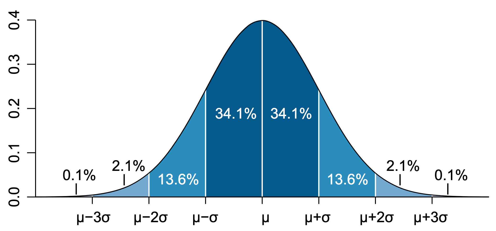
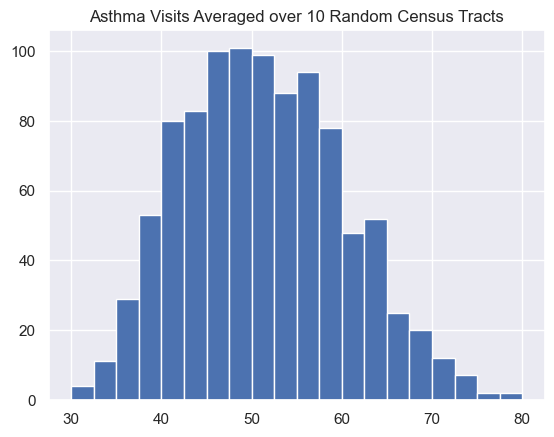
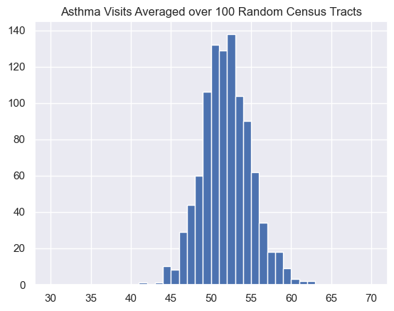
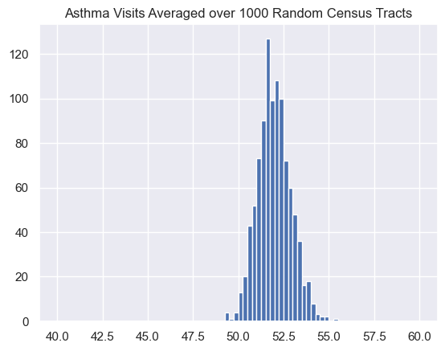

Central Limit Theorem
The distribution of means of samples of any population with any distribution will be normally distributed and have a standard deviation, called a standard error, that is

Implications:
- the means of large random samples of any population (with any distribution) will have a normal distribution around the population mean
- the standard error (a function of the population standard deviation and the sample size) tells us how close these sample means lie to the population means
- sample means further from the population mean are less likely
- the less likely our samples means are, the more we should suspect another causal effect
Central Limit Theorem Inferences
- with population information (mean, std dev) you can make inferences about properly-drawn samples
- with information about a properly drawn sample, you can make inferences about the population
- if you have data on a sample and the population, you can tell if the sample is consistent with likely samples from the population
- if you have data on two samples, you can see if they were likely drawn from the same population
Definitions
Population Distribution
The distribution of a measurement for an entire population.
Sample Distribution
The distribution that results from taking a statistic from repeated samples of a population.
This is often the means of a sample from the population.
The central limit theorem tells us that if we take repeated samples of a population, the sample distribution will have the same mean, but the standard deviation of the sample distribution is equal to the standard deviation of the population divided by the square root of the number of samples.
Likelihood
A key question is given an expected distribution, how likely is it that I’m seeing my (or a more extreme) observation?
Example: If I draw a human on earth at random, how likely is it that they are 2 meters or taller?
Hypothesis Testing
The practice of determining whether an observed difference is due to random fluctuations or the experiment (drug, education, etc).
Statistical Significance
A measure of the probability that the mean of a random sample from a subpopulation was randomly drawn from the larger population.
For example, if you drew 10 random SSU students and they were all taller than 6 feet, this probably wasn’t random but was at basketball team practice.
Effect Size
This is the difference in the mean between an original distribution and the distribution after a treatment or from looking at a subpopulation.
Null Hypothesis
Some examples
- Experimental drug outcome is not better than placebo
- Participation in a program does not increase outcomes
A basic recipe
- identify your measurement
- determine how you’ll create your sample
- identify your null hypothesis
- determine the mean and standard deviation of your population
- find the average of your sample
- find the standard error
- the standard error is the standard deviation for the normal distribution describing a large number of random draws the same size as your sample
- compare the difference in averages to your standard error
- decide if the null hypothesis is likely or unlikely based on this comparison
Normal Distribution
To quantify the likelihood of our averages, we use the normal or gaussian distribution as a tool.
Here is an ideal normal distribution. 
It has the equation

Where $\mu$ is the mean, and $\sigma$ is the standard deviation.

If we know our distribution is normal and we know the mean $\mu$, and the standard deviation $\sigma$, we know the probability of finding value near the mean.
- 68% of values fall within one standard deviation of the mean
- 95% of values fall within two standard deviations of the mean
- 99.7% of values fall within three standard deviations of the mean
Standard Error
No matter the original population, the averages of samples will create a normal distribution with the same mean $\mu$.
The standard deviation of this distribution has a special name, the standard error, or SE.
If you repeatedly take sample means, the standard error is the amount of variablity we expect these sample means to have. This amount variability goes down as you include more data in each of the repeated samples.
The standard error is related to the standard deviation of the population by the following equation, where
- The $SE$ is the standard error of the sample
- $\sigma$ is the standard deviation of the population
- $n$ is the size of the sample selected from the population.
$$SE=\frac{\sigma}{\sqrt{n}}$$
We can use the same 68-95-99 reasoning for how likely it is that our difference in the means is likely or unlikely.
Distribution of Averages of Random Samples
The central limit theorem tells us about the width of the distribution of averages taken from a larger population.
Here we take the overall statistics for asthma in California from the CES data.

For this data, the mean is 52.0 and the standard deviation is 30.6.
If we take repeated samples of 10, 100, or 1000 census tracts and plot those in a histogram, we notice that the width of the distribution of the averages decreases as the number of census tracts included in the average goes up.

For these averages, the mean is 52.1 and the standard deviation is 9.4.
According to the central limit theorem, using $n=10$ , the standard error will be be
$$SE=\frac{\sigma}{\sqrt{n}}=\frac{30.6}{\sqrt{10}}\approx 9.68$$
so the prediction is very close.

Here the observed mean is 52.0 and the standard deviation is 3.06, which matches the expected deviation very well.
<$$SE=\frac{\sigma}{\sqrt{n}}=\frac{30.6}{\sqrt{100}}=3.06$$

Here the expected standard deviation is:
$$SE=\frac{\sigma}{\sqrt{n}}=\frac{30.6}{\sqrt{1000}}\approx 0.968$$
This matches the observed devation of 0.910 very well and the mean is 52.0 also matching well.
If we have an asthma intervention (air filtering in schools, better health screening, etc.) and we apply it to a number of census tracts, we would compare the average asthma incidence in the treatment areas to one of these distributions with the same number of samples.
Implications
- More samples make seeing the same difference in the means less likely
- In order to say that a difference in means is unlikely, our average needs to be large enough so that the distribution of sample means is narrow
Standard Error
This animation shows that as the number of samples grows, the width of the sample distribution shrinks, making smaller differences of means more likely.
Example
Let’s say we want to try an intervention where we install high-quality air filters in all the schools in some of the census tracts (say 200 census tracts).
We would take the average of the asthma incidents in these census tracts and compare to the distribution of 200 random census tracts drawn repeatedly.